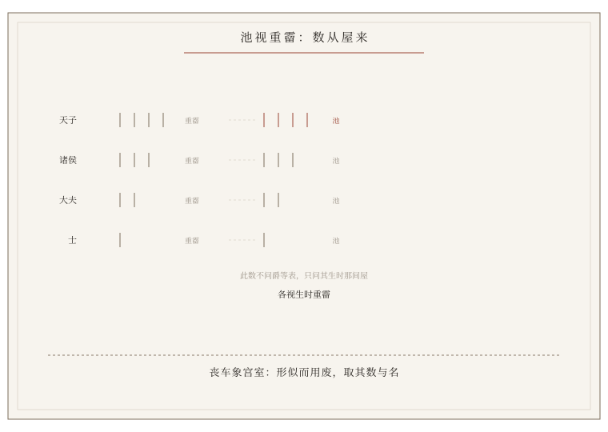

檀弓上 · 三·一百零一 · 第 304 课
池视重霤。
说什么事：丧车（柳车）上有一件叫「池」的东西，它的数目，照死者生前屋上「重霤」的数目来定。
落在哪一层：丧车象宫室。论「死车取生屋之数」。
为何编在此位：上一批收在「各以其服除」，是人事的界；此课起，转入器制——丧事里的每一件东西，都有它的「视」（比照）。
【经】池視重霤。
【注】如堂之有承霤也。承霤以木為之，用行水，亦宮之飾也。柳，宮象也。以竹為池，衣以青布，縣銅魚焉。今宮中有承霤，云以銅為之。
【疏】「池」者，柳车之池也。「重霤」者，屋承霤也，以木为之，承于屋霤，入此木中，又从木中而霤于地，故谓此木为「重霤」也。天子则四注，四面为重霤；诸侯四注，重霤则差降，去后，余三；大夫唯余前后二，士则唯一在前。而生时既屋有重霤以行水，死时柳车亦象宫室，而在车覆鳖甲之下、墙帷之上，织竹为之，形如笼，衣以青布，以承鳖甲，名之为池，以象重霤方面之数，各视生时重霤。
池 柳车上的竹制构件，形如笼，覆青布，在鳖甲之下、墙帷之上。
视 比照、依准。此字是全节的关节。
重霤 屋上承接雨水的木槽。重，读如字；霤，屋檐流下的水。
承霤 即重霤。注以「承霤」释之，取「承水」之义。
四注 四面都有屋檐下注。注，屋水流下之处。
差降 依次递减。诸侯亦四注，而重霤去其后，余三面。
柳 柳车，丧车之名。注「柳，宫象也」——柳车是宫室的象。
鳖甲 柳车顶上覆的甲形构件，其状如鳖背。
墙帷 柳车四周的布帷。
县铜鱼 悬挂铜制的鱼。县，同悬。
丧车上的池，数目依死者生前屋上重霤的数目而定。
此节四个字，讲的是「数」的传递。
重霤是屋上的东西：屋有四注，水从四面下来，就有四面承霤。天子四注四霤，诸侯去后一面，余三，大夫余二，士余一。
死了，人要装进柳车。柳车是「宫象」——照屋子的样子做的车。屋上有重霤，车上也该有对应的东西。于是有了「池」：织竹为笼，覆以青布，摆在鳖甲之下、墙帷之上，承接鳖甲。
池的数目，依重霤的数目。这就是「池视重霤」。
注把这一层「象」说得很直：柳，宫象也。车不是车，是屋；池不是池，是霤。丧礼里的器物，几乎件件如此——它们不是新造的东西，是生者日用之物搬到死者身上，改一个名字，减一分功用。
这里有一个值得停一下的地方：「视」这个字。它不作「等于」，作「比照」。池不必真的能接水，它只需与重霤的数目相称。丧礼的「象」都是这样：形似而用废，取其名与数，不取其能。
第一层 丧车为什么要象宫室 人死了，从「寝」移到「殡」，从「殡」移到「墓」。这一路，他不再住屋。柳车就是他在这一段路上住的屋——有顶（鳖甲）、有帷（墙帷）、有檐水（池）。丧礼不肯让死者在最后一段路上「露天」。
这是礼的体贴处：它不承认死者已无知觉，也不假装他仍有；它给他一间走动的屋。
第二层 数目里的等级 四、三、二、一，是爵等。天子四注，诸侯三，大夫二，士一。这个递减不是为了省钱，是为了「称」——器与位相称。位高者其象备，位卑者其象简。丧礼中几乎每一件器物都有这样一条等差线：棺的重数、椁的厚薄、封的高度，皆如此。
读这些等差，不可只读作等级压迫。它同时是一条限制线：位卑者不得僭，位尊者不得过。后一条尤难——尊者要「不过」自己的位，比卑者要「不敢」更难。
第三层 「象」的分寸 池不能承水，这是明确的。那么它承什么？承的是「这是屋」这个意思。丧礼中大量器物都处于这个位置：形是实的，用是虚的。277 节论明器「竹不成用、瓦不成味」，正是同一条原则。
「象」的好处在于：它既承认死者需要的形状，又不假装死者还能用。若做得太实，就成了 293 的「实之」；若做得太虚，连形状都不成，则不成其为象。池恰在中间。
第四层 「各视生时」四字 疏末一句：「各视生时重霤。」这四个字把「视」的对象说清了：不是视爵等表，是视死者生前那间屋。同是诸侯，屋有异制，池亦随之。礼在此留了一个活口——依其生时之实，不依其位之文。
这一层极重要：礼的等差是框架，具体之数还要落到「他生前那间屋」。这就是礼的「不整齐」之处，也是它不僵死的原因。
与今日何干 今人办丧，灵车、灵堂、纸扎的屋，皆是「象」。此节问的是：你的象，取的是数还是排场？取数者，数目有据；取排场者，数目无据，只以多为敬。
| 左 | 右 |
|---|---|
| 池 | 车上之象 |
| 视 | 比照其数 |
| 重霤 | 屋上之实 |
| 天子四注 | 四 |
| 诸侯四注 | 去后余三 |
| 大夫 | 前后二 |
| 士 | 一在前 |
| 各视生时 | 不视位表 |
画一处庭中，视点平视略远。画面左侧是一间屋的檐角，可见四道屋檐下注之口（只画檐口与四道向下的水线，不画屋内）。画面右侧停着一辆丧车（柳车），车顶覆甲形之盖、四周垂青布之帷，盖下有数只竹笼状之物（只画笼形轮廓，不画细节）。屋与车之间有一人（侧身、右手在屋与车之间来回比划）。不写文字、不画人面细节。赭色只用在车上那几只竹笼的边缘，与屋檐最前一道水线的末端。
